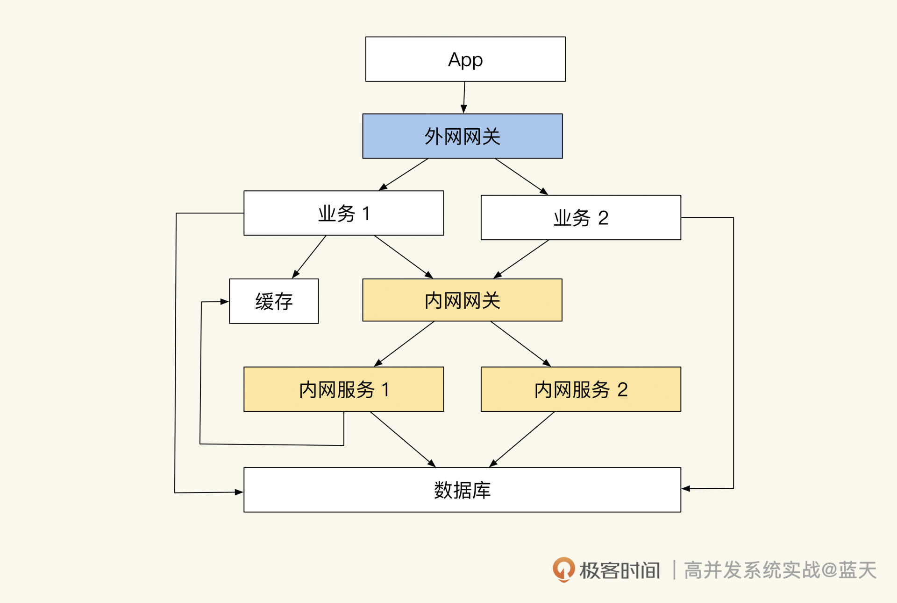
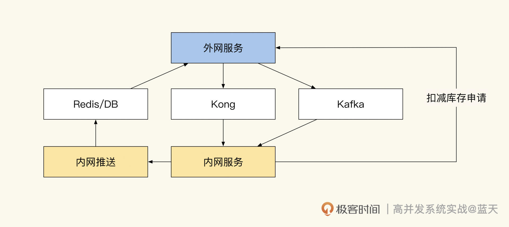

- 00 开篇词 高并发系统，技术实力的试金石.md.html
- 01 结构梳理：大并发下，你的数据库表可能成为性能隐患.md.html
- 02 缓存一致：读多写少时，如何解决数据更新缓存不同步？.md.html
- 03 Token：如何降低用户身份鉴权的流量压力？.md.html
- 04 同城双活：如何实现机房之间的数据同步？.md.html
- 05 共识Raft：如何保证多机房数据的一致性？.md.html
- 06 领域拆分：如何合理地拆分系统？.md.html
- 07 强一致锁：如何解决高并发下的库存争抢问题？.md.html
- 08 系统隔离：如何应对高并发流量冲击？.md.html
- 09 分布式事务：多服务的2PC、TCC都是怎么实现的？.md.html
- 10 稀疏索引：为什么高并发写不推荐关系数据库？.md.html
- 11 链路追踪：如何定制一个分布式链路跟踪系统 ？.md.html
- 12 引擎分片：Elasticsearch如何实现大数据检索？.md.html
- 13 实时统计：链路跟踪实时计算中的实用算法.md.html
- 14 跳数索引：后起新秀ClickHouse.md.html
- 15 实践方案：如何用C++自实现链路跟踪？.md.html
- 16 本地缓存：用本地缓存做服务会遇到哪些坑？.md.html
- 17 业务脚本：为什么说可编程订阅式缓存服务更有用？.md.html
- 18 流量拆分：如何通过架构设计缓解流量压力？.md.html
- 19 流量调度：DNS、全站加速及机房负载均衡.md.html
- 20 数据引擎：统一缓存数据平台.md.html
- 21 业务缓存：元数据服务如何实现？.md.html
- 22 存储成本：如何推算日志中心的实现成本？.md.html
- 23 网关编程：如何通过用户网关和缓存降低研发成本？.md.html
- 24 性能压测：压测不完善，效果减一半.md.html
- 答疑课堂 思考题答案（一）.md.html
- 结束语 为者常成，行者常至.md.html
- 捐赠
08 系统隔离：如何应对高并发流量冲击？
你好，我是徐长龙，今天我想跟你聊聊如何做好系统隔离。
我曾经在一家教育培训公司做架构师，在一次续报活动中，我们的系统出现了大规模崩溃。在活动开始有五万左右的学员同时操作，大量请求瞬间冲击我们的服务器，导致服务端有大量请求堆积，最终系统资源耗尽停止响应。我们不得不重启服务，并对接口做了限流，服务才恢复正常。
究其原因，我们习惯性地将公用的功能和数据做成了内网服务，这种方式虽然可以提高服务的复用性，但也让我们的服务非常依赖内网服务。当外网受到流量冲击时，内网也会受到放大流量的冲击，过高的流量很容易导致内网服务崩溃，进而最终导致整个网站无法响应。
事故后我们经过详细复盘，最终一致认为这次系统大规模崩溃，核心还是在于系统隔离性做得不好，业务极易相互影响。

如果系统隔离性做得好，在受到大流量冲击时，只会影响被冲击的应用服务，即使某个业务因此崩溃，也不会影响到其他业务的正常运转。这就要求我们的架构要有能力隔离多个应用，并且能够隔离内外网流量，只有如此才能够保证系统的稳定。
拆分部署和物理隔离
为了提高系统的稳定性，我们决定对系统做隔离改造，具体如下图：
- 也就是说，每个内、外网服务都会部署在独立的集群内，同时每个项目都拥有自己的网关和数据库。而外网服务和内网必须通过网关才能访问，外网向内网同步数据是用Kafka来实现的。
网关隔离和随时熔断
在这个改造方案中有两种网关：外网网关和内网网关。每个业务都拥有独立的外网网关（可根据需要调整）来对外网流量做限流。当瞬时流量超过系统承受能力时，网关会让超编的请求排队阻塞一会儿，等服务器QPS高峰过后才会放行，这个方式比起直接拒绝客户端请求来说，可以给用户更好的体验。
外网调用内网的接口必须通过内网网关。外网请求内网接口时，内网网关会对请求的来源系统和目标接口进行鉴权，注册授权过的外网服务只能访问对其授权过的内网接口，这样可以严格管理系统之间的接口调用。

同时，我们在开发期间要时刻注意，内网网关在流量增大的时候要做熔断，这样可以避免外网服务强依赖内网接口，保证外网服务的独立性，确保内网不受外网流量冲击。并且外网服务要保证内网网关断开后，仍旧能正常独立运转一小时以上。
但是你应该也发现了，这样的隔离不能实时调用内网接口，会给研发造成很大的困扰。要知道常见外网业务需要频繁调用内网服务获取基础数据才能正常工作，而且内网、外网同时对同一份数据做决策的话，很容易出现混乱。
减少内网API互动
为了防止共享的数据被多个系统同时修改，我们会在活动期间把参与活动的数据和库存做推送，然后自动锁定，这样做可以防止其他业务和后台对数据做修改。若要禁售，则可以通过后台直接调用前台业务接口来操作；活动期间也可以添加新的商品到外网业务中，但只能增不能减。
这样的实现方式既可以保证一段时间内数据决策的唯一性，也可以保证内外网的隔离性。
不过你要注意，这里的锁定操作只是为了保证数据同步不出现问题，活动高峰过后数据不能一直锁定，否则会让我们的业务很不灵活。
因为我们需要把活动交易结果同步回内网，而同步期间外网还是能继续交易的。如果不保持锁定，数据的流向不小心会成为双向同步，这种双向同步很容易出现混乱，系统要是因此出现问题就很难修复，如下图：

我们从图中可以看到，两个系统因为没有实时互动的接口，数据是完全独立的，但是在回传外网数据到内网时，库存如果在两个系统之间来回传递，就很容易出现同步冲突进而导致混乱。那怎么避免类似的问题呢？
其实只有保证数据同步是单向的，才能取消相互锁定操作。我们可以规定所有库存决策由外网业务服务决定，后台对库存操作时必须经过外网业务决策后才能继续操作，这样的方式比锁定数据更加灵活。而外网交易后要向内网同步交易结果，只能通过队列方式推送到内网。
事实上，使用队列同步数据并不容易，其中有很多流程和细节需要我们去打磨，以减少不同步的情况。好在我们使用的队列很成熟，提供了很多方便的特性帮助我们降低同步风险。
现在我们来看下整体的数据流转，如下图：

后台系统推送数据到Redis或数据库中，外网服务通过Kafka把结果同步到内网，扣减库存需通知外网服务扣减成功后方可同步操作。
分布式队列控流和离线同步
我们刚才提到，外网和内网做同步用的是Kafka分布式队列，主要因为它有以下几个优点：
- 队列拥有良好吞吐并且能够动态扩容，可应对各种流量冲击场景；
- 可通过动态控制内网消费线程数，从而实现内网流量可控；
- 内网消费服务在高峰期可以暂时离线，内网服务可以临时做一些停机升级操作；
- 内网服务如果出现bug，导致消费数据丢失，可以对队列消息进行回放实现重新消费；
- Kafka是分区消息同步，消息是顺序的，很少会乱序，可以帮我们实现顺序同步；
- 消息内容可以保存很久，加入TraceID后查找方便并且透明，利于排查各种问题。
两个系统之间的数据同步是一件很复杂、很繁琐的事情，而使用Kafka可以把这个实时过程变成异步的，再加上消息可回放，流量也可控，整个过程变得轻松很多。
在“数据同步”中最难的一步就是保证顺序，接下来我具体介绍一下我们当时是怎么做的。
当用户在外网业务系统下单购买一个商品时，外网服务会扣减本地缓存中的库存。库存扣减成功后，外网会创建一个订单并发送创建订单消息到消息队列中。当用户在外网业务支付订单后，外网业务订单状态会更新为“已支付”，并给内网发送支付成功的消息到消息队列中，发送消息实现如下：
type ShopOrder struct {
TraceId string `json:trace_id` // trace id 方便跟踪问题
OrderNo string `json:order_no` // 订单号
ProductId string `json:"product_id"` // 课程id
Sku string `json:"sku"` // 课程规格 sku
ClassId int32 `json:"class_id"` // 班级id
Amount int32 `json:amount,string` // 金额，分
Uid int64 `json:uid,string` // 用户uid
Action string `json:"action"` // 当前动作 create：创建订单、pay：支付订单、refund：退费、close：关闭订单
Status int16 `json:"status"` // 当前订单状态 0 创建 1 支付 2 退款 3 关闭
Version int32 `json:"version"` // 版本，会用当前时间加毫秒生成一个时间版本，方便后端对比操作版本，如果收到消息的版本比上次操作的时间还小忽略这个事件
UpdateTime int32 `json:"update_time"` // 最后更新时间
CreateTime int32 `json:"create_time"` // 订单创建日期
}
//发送消息到内网订单系统
resp, err := sendQueueEvent("order_event", shopOrder{...略}, 消息所在分区)
if err != nil {
return nil, err
}
return resp, nil
可以看到，我们在发送消息的时候已经通过某些依据（如订单号、uid）算出这条消息应该投放到哪个分区内，Kafka同一个分区内的消息是顺序的。
那为什么要保证消费顺序呢？其实核心在于我们的数据操作必须按顺序执行，如果不按顺序，就会出现很多奇怪的场景。
比如“用户执行创建订单、支付订单、退费”这一系列操作，消费进程很有可能会先收到退费消息，但由于还没收到创建订单和支付订单的消息，退费操作在此时就无法进行。
当然，这只是个简单的例子，如果碰到更多步骤乱序的话，数据会更加混乱。所以我们如果想做好数据同步，就要尽量保证数据是顺序的。
不过，我们在前面讲Kafka的优点时也提到了，队列在大部分时间是能够保证顺序性的，但是在极端情况下仍会有乱序发生。为此，我们在业务逻辑上需要做兼容，即使无法自动解决，也要记录好相关日志以方便后续排查问题。
不难发现，因为这个“顺序”的要求，我们的数据同步存在很大难度，好在Kafka是能够长时间保存消息的。如果在同步过程中出现问题，除了通过日志对故障进行修复外，我们还可以将故障期间的流量进行重放（重放要保证同步幂等）。
这个特性让我们可以做很多灵活的操作，甚至可以在流量高峰期，暂时停掉内网消费服务，待系统稳定后再开启，落地用户的交易。
除了数据同步外，我们还需要对内网的流量做到掌控，我们可以通过动态控制线程数来实现控制内网流量的速度。
好，今天这节课就讲到这里，相信你已经对“如何做好系统隔离”这个问题有了比较深入的理解，期望你在生产过程中能具体实践一下这个方案。
总结
系统的隔离需要我们投入大量的时间和精力去打磨，这节课讲了很多会对系统稳定性产生影响的关键特性，让我们整体回顾一下。
为了实现系统的隔离，我们在外网服务和内网服务之间设立了接口网关，只有通过网关才能调用内网接口服务。并且我们设定了在大流量冲击期间，用熔断内网接口的交互方式来保护内网。而外网所需的所有数据，在活动开始之前都要通过内网脚本推送到商城本地的缓存中，以此来保证业务的运转。
同时，外网成功成交的订单和同步信息通过分布式、可实时扩容和可回放的消息队列投递到了内网，内网会根据内部负载调整消费线程数来实现流量可控的消息消费。由此，我们实现了两个系统之间的同步互动。
我把这节课的关键知识画成了导图，供你参考：-

思考题
用什么方法能够周期检查出两个系统之间不同步的数据？
欢迎你在留言区与我交流讨论，我们下节课见！
© 2019 - 2023 Liangliang Lee. Powered by gin and hexo-theme-book.